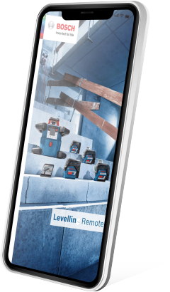

NÍVEL A LASER BOSCH: FERRAMENTAS QUE NÃO TE DEIXAM NA MÃO
Niveladores Bosch
NÍVEL A LASER BOSCH: FERRAMENTAS QUE NÃO TE DEIXAM NA MÃO
Em uma obra, tempo é dinheiro! Os Niveladores a Laser Bosch são simples de usar, contam com trava de pêndulo e proteção contra pó e água,
garantindo maior profissionalismo no seu trabalho.
Trabalhe mais rápido usando seu celular: crie projetos, plantas baixas e até fotos com medidas. Tudo na hora com o
aplicativo Bosch Levelling da Bosch ou com um dos inúmeros apps parceiros. Disponível para o modelo
GLL 3-80 CG.
APPs parceiros:

Escaneie aqui com a câmera do seu celular
Baixe agora:
APPs parceiros:
A GENTE TE DÁ UMA FORÇA! saiba tudo sobre as ferramentas bosch em primeira mão
Para fazer nivelamento em longas distâncias, utilize os Niveladores a Laser Bosch com seus receptores. Os
receptores detectam a linha do laser que não vemos a olho nu e mostram na tela a posição exata que a linha está passando. Você amplia, assim, o alcance
do seu Nivelador a Laser, garantindo a mesma precisão em longas distâncias e ao ar livre!
Os Niveladores a Laser Bosch possuem a tecnologia de trava de pêndulo, para preservar a calibragem do nível por
mais tempo. Ao transportar seu Nivelador a Laser, o pêndulo estará travado, aumentando a durabilidade e precisão da ferramenta por mais tempo.
Alinhamento perfeito entre o teto e o chão. Para facilitar ainda mais seu trabalho, alguns modelos de
Niveladores a Laser Bosch possuem pontos de prumo a laser, que te possibilitam fazer alinhamentos perfeitamente
perpendiculares entre o teto e o chão, facilitando diversos tipos de instalações.
Em uma obra, tempo é dinheiro! Por isso, com os Niveladores a Laser Bosch, você realiza marcações rápidas, na
horizontal ou na vertical, diminuindo seu tempo de trabalho. Os Niveladores a Laser, ainda, possuem revestimentos emborrachados resistentes para
aguentar qualquer condição e ambiente de obra. Em sua maioria, possuem certificados de proteção contra poeira e respingos de água.
Com tecnologia de ponta e materiais de qualidade, os níveis a laser Bosch são projetados para durar por anos e
suportar as condições mais adversas.